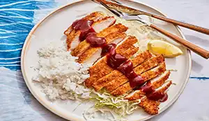

Our Menu
Onigiri
Onigiri are rice balls that can be filled with fish, pickled vegetables, or other tasty fillings. They’re a common Japanese snack, often wrapped in seaweed for easy eating.
View IngredientsSukiyaki

Sukiyaki is a hot pot dish where thin beef slices, tofu, and vegetables are simmered in a sweet soy sauce broth. It’s often enjoyed at the table with family or friends.
View IngredientsSushi
Sushi combines vinegared rice with fresh fish, seafood, or vegetables in bite-sized pieces or rolls. It’s one of Japan’s most well-known dishes worldwide.
View IngredientsTempura
Tempura is seafood or vegetables dipped in a light batter and fried until golden and crispy. It’s usually served with dipping sauce or over rice or noodles.
View IngredientsTonkatsu
Tonkatsu is a breaded and deep-fried pork cutlet that’s crunchy on the outside and tender inside. It’s often served with shredded cabbage and a savory sauce.
View Ingredients